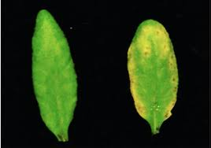

I have basic knowledge in HTML, CSS, and JavaScript, and I enjoy creating simple and responsive web pages. I am familiar with Git and GitHub for version control. I am passionate about web development and always eager to learn new technologies. I am interested in UI/UX design and like building user-friendly interfaces. I enjoy problem solving and improving my coding skills day by day. I am motivated to grow as a web developer and work on real-time projects.
I developed a Plant Disease Detection project that helps identify diseases in plant leaves. The system uses image processing and basic machine learning techniques to analyze the leaf images. I used Python for the backend and implemented a simple interface for users to upload images. This project helped me understand how technology can be used in agriculture and improved my problem-solving skills.

Social Networking Analysis using R involves studying user interactions and relationships on social media platforms like Twitter and Facebook. It uses R to collect, analyze, and visualize data such as likes, comments, and connections between users. The project helps in identifying patterns, communities, and influential users within a network. Tools like igraph are used to create network graphs, and ggplot2 is used for visualization. This analysis provides insights into user behavior and trends in social media